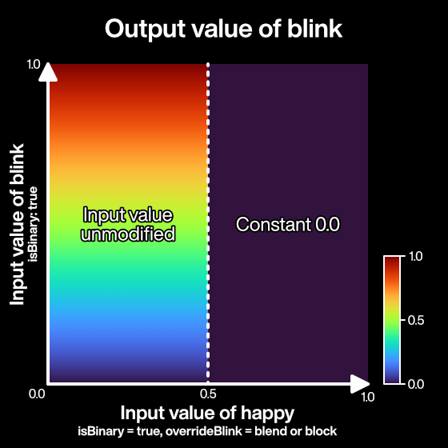

VRMC_vrm.expressions
This document provides specifications for the expressions field of theVRMC_vrm extension.
Expression is
- MorphTarget
- MaterialColor
- TextureTransform
It is a function to specify the meaning for the group of.
For example, the combination of
Mouth-to-mouth MorphTargetandEye-closing MorphTargetshould besad.
Expression Specification
JSON Schema
{
"extensionsUsed": [
"VRMC_vrm"
],
"extensions": {
"VRMC_vrm": {
// VRM extension
"specVersion": "1.0",
"humanoid": {},
"meta": {},
"firstPerson": {},
/* from here */
"expressions": {
"preset": {
"aa": { /* expression object */ },
"angry": { /* expression object */ },
"blink": {
"isBinary": false,
"morphTargetBinds": [
{
"index": 1,
"node": 2,
"weight": 1
},
{
"index": 2,
"node": 2,
"weight": 1
}
],
"overrideBlink": "none",
"overrideLookAt": "none",
"overrideMouth": "none"
},
"blinkLeft": { /* expression object */ },
"blinkRight": { /* expression object */ },
"ee": { /* expression object */ },
"happy": { /* expression object */ },
"ih": { /* expression object */ },
"lookDown": { /* expression object */ },
"lookLeft": { /* expression object */ },
"lookRight": { /* expression object */ },
"lookUp": { /* expression object */ },
"neutral": { /* expression object */ },
"oh": { /* expression object */ },
"ou": { /* expression object */ },
"relaxed": { /* expression object */ },
"sad": { /* expression object */ },
"surprised": { /* expression object */ }
}
"custom": {
"custom_name_1": { /* expression object */ },
"custom_name_2": { /* expression object */ },
},
},
"lookAt": {},
},
/* end */
"VRMC_springBone": {},
"VRMC_node_constraint": {}
},
// glTF-2.0
"materials": [
"extensions": {
"VMRC_materials_mtoon": {}
}
],
}
expression object
VRMC_vrm.expressions.expression
| Name | Remarks |
|---|---|
| isBinary | A value greater than 0.5 is 1.0, otherwise 0.0 |
| morphTargetBinds | List of MorphTargetBinds (discussed below) |
| materialColorBinds | List of MaterialValueBinds (discussed below) |
| textureTransformBinds | List of TextureTransformBinds (discussed below) |
| overrideMouth | Manipulates the lip sync (discussed below) weights when the Weight of this Expression is non-zero. |
| overrideBlink | Manipulates the blink (described below) weight when the Weight of this Expression is non-zero. |
| overrideLookAt | Manipulates the weight of the line of sight (discussed below) when the Weight of this Expression is non-zero. |
Expression control
When each expression is used, it is assumed that it has a "Value" state that represents the strength of its facial expression.
Value is a number with a value in the range [0-1].
The VRM implementation should clamp the value if the application gives a value outside this range.
Preset Expressions
Below is the list of preset expressions.
These expressions will be stored in expressions.preset .
All preset expressions are optional.
Emotions
| Name | Remarks |
|---|---|
| happy | Changed from joy |
| angry | anger |
| sad | Changed from sorrow |
| relaxed | Comfortable. Changed from fun |
| surprised | surprised. Added new in 1.0 |
There are no specific specifications for facial deformation.
Lip Sync Procedural
Procedural: A value that can be automatically generated by the system.
Analyze microphone input, generate from text, etc.
| Name | Remarks |
|---|---|
| aa | aa |
| ih | i |
| ou | u |
| ee | eh |
| oh | oh |
Blink procedural
Procedural: A value that can be automatically generated by the system.
Randomly blink, etc.
| Name | Remarks |
|---|---|
| blink | close both eyelids |
| blinkLeft | Close the left eyelid |
| blinkRight | Close right eyelid |
gaze procedural
Procedural: A value that can be automatically generated by the system.
The VRM LookAt will generate a value for the gaze point from time to time (see LookAt Expression Type).
| Name | Remarks |
|---|---|
| lookUp | For models where the line of sight moves with Expression instead of bone. See eye control. |
| lookDown | For models where the line of sight moves with Expression instead of bone. See eye control. |
| lookLeft | For models whose line of sight moves with Expression instead of bone. See eye control. |
| lookRight | For models where the line of sight moves with Expression instead of bone. See eye control. |
Other
| Name | Remarks |
|---|---|
| neutral | left for backwards compatibility. |
Custom Expressions
Aside from Preset Expressions, User-defined expressions can be defined.
Custom Expressions will be stored in expressions.custom .
Custom Expressions cannot have names that are the same as any Preset Expressions.
Procedural override
Lip sync, blink, and gaze are classified as procedural.
Procedural assumes that the system will generate it automatically.
As a result, these Expressions are valid at the same time as other Expressions.
The mesh may break.
For example
aais applied at the same time ashappywhen the mouth opens => The mouth opens too much and becomes strange- Close eyes
sadandblinkare applied => Eyes close twice and eyelids pierce cheeks lookRightis applied at the same time asblink=> Eyes penetrate the eyelids
Etc.
To protect against these, there is the ability to override the value of a procedural Expression when procedural Expression is enabled at the same time for a non-procedural Expression.
Do not lip sync during
happy
For lip sync, blinking and gaze
You can set overrideMouth, overrideBlink, and overrideLookAt.
Each override property affects the following procedural facial expressions:
| Target | Properties | ExpressionPreset |
|---|---|---|
| Lip Sync | overrideMouth |
aa, ih,ou, ee,oh |
| Blink | overrideBlink |
blink, blinkLeft,blinkRight |
| Gaze | overrideLookAt |
lookUp, lookDown,lookLeft, lookRight |
The specification does not specifically define whether these override properties work for custom facial expressions.
Make the appropriate settings according to the demand on the application side.
For example, if you want to use a lip sync that is not included in the VRM preset for each application using a custom facial expression, you can use the override property to control the expression of that custom facial expression.For the above reasons, it is recommended that VRM implementations provide an interface that allows custom facial expressions to be overridden.
Like overrideBlink for blink, settings for the same kind are treated as invalid.
The settings are all the same, and the effects are as follows.
| Name | Remarks |
|---|---|
| none | do nothing |
| block | Set the target weight to 0. For example, when overrideBlink = block is set for happy, when happy.weight> 0, the weight of blink, blinkLeft, blinkRight is overridden to 0. |
| blend | Attenuates the target weight. For example, when overrideBlink = blend is set for happy, blink, blinkLeft, and blinkRight are blended with happy.weight and attenuated (see below). |
blend details
For example, if happy is set to overrideBlink = blend
As the value of happy fades from 0 to 1, it linearly attenuates blink.
The behavior of the intermediate value between 0 and 1 is different from block.
var value = 0;
if (happyWeight > 0 && happy.overrideBlink == "blend") value += happyWeight;
if (angryWeight > 0 && happy.overrideBlink == "blend") value += angryWeight;
if (sadWeight > 0 && happy.overrideBlink == "blend") value += sadWeight;
if (relaxedWeight > 0 && happy.overrideBlink == "blend") value += relaxedWeight;
if (surprisedWeight > 0 && happy.overrideBlink == "blend") value += surprisedWeight;
var factor = 1.0 - saturate(value);
SetBlinkWeight(blinkWeight * factor);
Interaction between override and isBinary
When an expression with isBinary overrides other expressions, the binary output value MUST be used to affect other expressions.
This specification prevents other expressions from being suppressed when the overriding expression is not expressed visually on the character.
For example, ifisBinaryis set totruefor thehappyexpression andblockorblendis set foroverrideBlink, when the value ofhappyis greater than or equals 0.5,blinkis completely suppressed. Conversely, when the value ofhappyis less than 0.5, the input value ofblinkis evaluated regardless of the value ofhappy.
When an expression with isBinary is overridden by other expressions, the expression MUST be completely suppressed if the effect received is greater than 0.0.
This specification prevents expressions with
isBinarythat are overridden by other expressions from being expressed with values other than 0 or 1.
For example, ifoverrideBlinkof the expressionhappyis set toblockorblend, and theisBinaryof the expressionblinkistrue,blinkis completely suppressed ifhappyhas any effect on it.
MorphTargetBind
extensions.VRMC_vrm.expressions [*] .morphTargetBinds [*]
Connect Expression and MorphTarget.
| Name | Remarks |
|---|---|
| node | index of target node (has mesh) |
| index | index of target morph (assuming all primitives have the same morphTarget) |
| weight | morph value when applied [0-1]. In 0.X [0-100] |
MaterialColorBind
extensions.VRMC_vrm.expressions [*] .materialColorBinds [*]
Connects the color changes of Expression and Material.
| Name | Remarks |
|---|---|
| material | index of the target material |
| type | Items to be changed in material (color, uvScale, uvOffset) |
| targetValue | material value when applied (float4) |
extensions.VRMC_vrm.expressions [*] .materialColorBinds [*] .type
Each corresponds to the following parameters:
| Name | pbrMetallicRoughness |
KHR_materials_unlit |
VRMC_materials_mtoon |
|---|---|---|---|
| color | pbrMetallicRoughness.baseColorFactor |
pbrMetallicRoughness.baseColorFactor |
pbrMetallicRoughness.baseColorFactor |
| emissionColor | emissiveFactor |
Unused | emissiveFactor |
| shadeColor | Unused | Unused | extensions.VRMC_materials_mtoon.shadeColorFactor |
| matcapColor | Unused | Unused | extensions.VRMC_materials_mtoon.matcapFactor |
| rimColor | Unused | Unused | extensions.VRMC_materials_mtoon.parametricRimColorFactor |
| outlineColor | Unused | Unused | extensions.VRMC_materials_mtoon.outlineColorFactor |
Although targetValue is defined as a float4, The 4th value must be ignored if there is no 4th component in the destination parameter.
TextureTransformBind
extensions.VRMC_vrm.expressions [*] .textureTransformBinds [*]
It connects the expression and the change of scale and offset of the texture of the target Material.
Of the textures used in the target material, all UV-accessed textures use the same value.
The texture that does not have UV access is MToon's matcap.
| Name | Remarks |
|---|---|
| material | index of the target material |
| scale | scale value when applied (float2, default = [1, 1]) |
| offset | offset value when applied (float2) |
Expression update algorithm
MorphTarget
- Set all MorphTargets to 0
- Accumulate the expression value (Weight)
void AccumulateValue (Expression expression, float value) - Apply the integrated value
MaterialColor
- Initialize all MaterialColor (not 0)
- Accumulate the Expression value (Weight)
void AccumulateValue (Exoressuib expression, float value) - Apply the integrated value
Base + (A.Target --Base) * A.Weight + (B.Target --Base) * B.Weight - Since the initial value of MaterialColor is not always 0, the difference from the initial value is added up.
TextureTransform
- Initialize all TextureTransform (not 0)
- Accumulate the Expression value (Weight)
void AccumulateValue (Exoressuib expression, float value) - Apply the integrated value
TODO: More details about the apply part should be covered